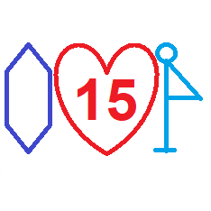
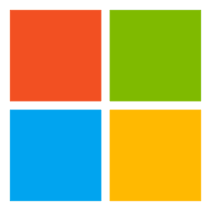
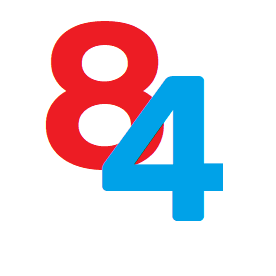

第5版日历
截至目前，我已经发明了21个日历版本，但我认为我曾制作过的最好的日历，无疑是第5版。
第8版日历
第8版日历可以显示未来14天内的事件，做工精美，但价格较高。
 第10版日历
第10版日历
在我的21个日历版本中，只有第10版日历是免费的，开源的。
第13版日历
最简洁，最高效，分类一目了然。同时也是最难制作的一版，因此价格偏高。
失败的日历
第4版日历
第4版日历只存在了7天，虽然被遗弃，但它的很多新功能至今依然保存在新版本的日历中。
第6版日历
第5版日历发布不久，第6版就已面世，但界面过于丑陋，尤其是在第5版日历的映衬下。
第11版日历
做工笨拙，繁忙，丑陋。只存在了1天，已被永久废弃。
第12版日历
第12版日历起初的设计计划是周历，但该计划已被抛弃，第12版日历最终没有发布。
第14版日历
第14版日历的设计过于暴力，且界面不适合作为日历而存在，已被永久废弃。

第15版日历
界面仿照第5版日历制作，起初的目的是为了重制经典，但后来拥有了不正当用途，被迫废弃。
我喜欢的游戏
Tanki Online
主玩游戏，因为这个游戏，我深受启发，让我对前端技术有了很大的兴趣。
我喜欢的手机品牌
Google
搭载原生安卓系统的手机，无广告推送，无使用限制，高度自由。
我喜欢的操作系统
Windows
我喜欢使用电脑，擅长使用视窗操作系统，同时我在开发页面的时候也使用视窗系统哦。
我的个人哀悼日
11月25日
我无法想象到我做的有多么的过分，这一天我永远不会忘记它。
我最喜欢使用的软件全家桶

微软全家桶
我是一个纯正的微软铁粉，我最喜欢使用微软的产品，大名鼎鼎的Windows是微软的产品哦。
我最害怕的班级

2020级4班
每当我经过3楼的走廊时都会害怕，以至于我每一次前往政教处都要绕道。